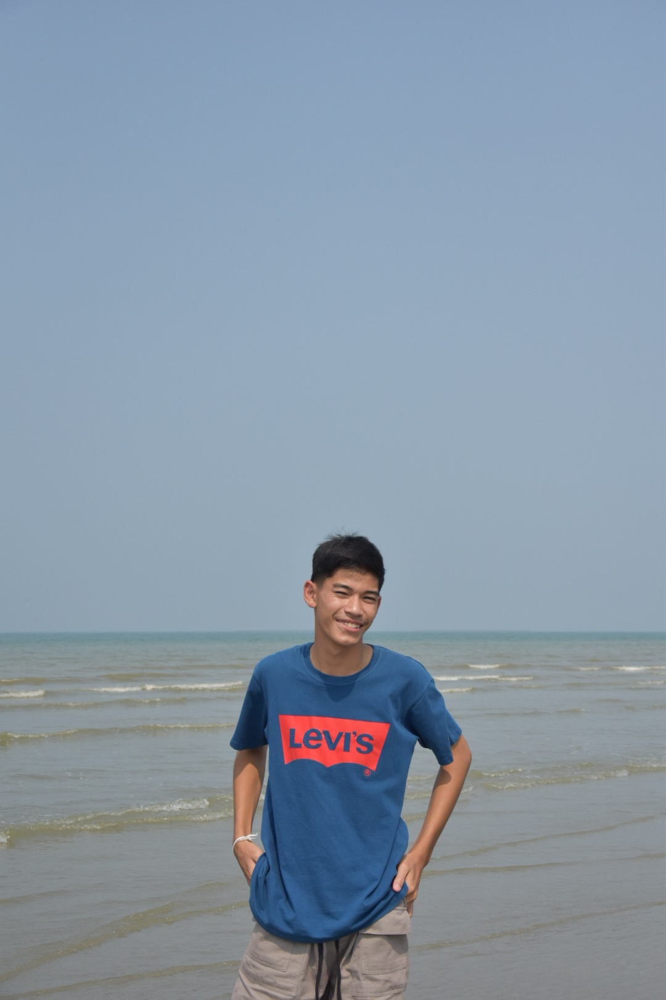

ตัวผมคือใคร
ผมชื่อ ณัฐวุฒิ อ่อนศรี ชื่อเล่น เม่น ครับ
ความหมายของชื่อ ณัฐวุฒิ = ผู้มีความเจริญรุ่งเรืองด้วยปัญญา หรือ นักปราชญ์ผู้มีควมเจริญก้าวหน้า
ความหมายของนามสกุล อ่อนศรี = ผู้มีความเจริญรุ่งเรืองที่มาพร้อมกับความอ่อนโยน
ความหมายของชื่อเล่น เม่น = เป็นสัตว์ชนิดหนึ่งที่มีขนเป็นหนามเเหลม สามารถใช้ป้องกันตัวจากศัตรูได้

